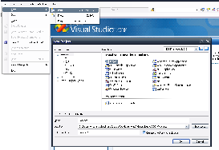
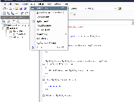
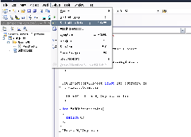

The UObject API can be used to add new objects written in C++ to the urbiscript language, and to interact from C++ with the objects that are already defined. We cover the use cases of controlling a physical device (servomotor, speaker, camera…), and interfacing higher-lever components (voice recognition, object detection…) with Urbi.
The C++ API defines the UObject class. To each instance of a C++ class deriving from UObject will correspond an urbiscript object sharing some of its methods and attributes. The API provides methods to declare which elements of your object are to be shared. To share a variable with Urbi, you have to give it the type UVar. This type is a container that provides conversion and assignment operators for all types known to Urbi: double, std::string and char*, and the binary-holding structures UBinary, USound and UImage. This type can also read from and write to the liburbi UValue class. The API provides methods to set up callbacks functions that will be notified when a variable is modified or read from Urbi code. Instance methods of any prototype can be rendered accessible from urbiscript, providing all the parameters types and the return type can be converted to/from UValue.
UObjects can be compiled easily directly with any regular compiler. Nevertheless, Urbi SDK provides two tools to compile UObject seamlessly.
The following sections work again on the running example of Listing 24. We will try to compile a shared library named ‘machine.so’ (or ‘machine.dll’ on Windows platforms) from a set of four files: ‘machine.hh’, ‘machine.cc’, ‘umachine.hh’, ‘umachine.cc’ (see their listings in Section 24.1). These files are stored in a ‘machine.uob’ directory; its name bares no importance, yet the ‘*.uob’ extension makes clear that it is a UObject.
In what follows, urbi-root denotes the top-level directory of your Urbi SDK package, see Section 13.2.
qibuild is a set of tools on top of cmake to help manage dependencies, among other things. The link above contains instructions to install qibuild and to get you started.
Once qibuild is installed, add urbi-sdk to a new toolchain using the toolchain.xml file provided in the root directory of urbi:
Then setup a new work directory for your uobject:
In this new working directory, create a new project for your uobject:
This will create the uobject directory, with a skeleton CMakeLists.txt in it. Modify it to add your uobject, assuming you have one source file named uobject.cc :
cmake_minimum_required(VERSION 2.8)
project(uobject)
find_package(qibuild)
find_package(urbi REQUIRED)
# Workaround a long-standing glitch
add_definitions(-D_USE_MATH_DEFINES)
qi_create_lib(uobject MODULE uobject.cc DEPENDS uobject)
Configure and build using:
This will produce the file build-urbi-sdk/lib/uobject.dll, or uobject.so depending on your architecture.
You can then load this uobject using urbi-launch(19.5.3).
On Unix platforms, compiling by hand into a shared library is straightforward:
$ g++ -I urbi-root/include \
-fPIC -shared \
machine.uob/*cc -o machine.so
$ file machine.so
machine.so: ELF 32-bit LSB shared object, Intel 80386, \
version 1 (SYSV), dynamically linked, not stripped
On Mac OS X the flag ‘-Wl,-undefined,dynamic_lookup’ is needed:
$ g++ -I urbi-root/include \
-shared -Wl,-undefined,dynamic_lookup \
machine.uob/*.cc -o machine.so
$ file machine.so
machine.so: Mach-O 64-bit dynamically linked shared library x86_64
umake can be used to compile UObjects. See Section 19.10 for its documentation.
You can give it a list of files to compile:
or directories in which C++ sources are looked for:
or finally, if you give no argument at all, the sources in the current directory:
If you installed Urbi SDK using its installer, and if you had Visual C++ installed, then the UObject wizard was installed. Use it to create your UObject code:

Then, compile your UObject.

And run it.

Let’s illustrate those concepts by defining a simple object: adder. This object has one variable v, and a method add that returns the sum of this variable and its argument.
To summarize:
When you start an Urbi server, an object of each class registered with UStart is created with the same name as the class. New instances can be created from Urbi using the new method. For each instance created in Urbi, a corresponding instance of the C++ object is created. You can get the arguments passed to the constructor by defining and binding a method named init with the appropriate number of arguments.
You can register any member function of your UObject using the macro UBindFunction:
UBindFunction(class-name, function-name).
Once done, the function can be called from urbiscript.
The following types for arguments and return value are supported:
The procedure to register new types to this system is explained in Section 25.18.
If you have multiple functions to bind, you can use the UBindFunctions macro to bind multiple functions at once:
UBindFunctions(class-name, function1, function2...).
Functions bound using UBindFunction are called synchronously, and thus block everything until they return.
If you wish to bind a function that requires a non-negligible amount of time to execute, you can have it execute in a separate thread by calling UBindThreadedFunction:
UBindThreadedFunction(class-name, function-name, lock-mode).
The function code will be executed in a separate thread without breaking the urbiscript execution semantics.
The lock-mode argument can be used to prevent parallel execution of multiple bound functions if your code is not thread-safe. It can be any of the following values.
Other queue sizes can be used by passing LockSpec(LOCK_FUNCTION, my-queue-size) as lock-mode.
There is a restriction to the locking mechanism: you cannot mix multiple locking modes. For instance a function bound with LOCK_FUNCTION mode will not prevent another function bound with LOCK_INSTANCE from executing in parallel.
You can perform your own locking using semaphores if your code needs a more complex locking model.
You can limit the maximum number of threads that can run in parallel by using the setThreadLimit function.
You can register a function that will be called each time a variable is modified by calling UNotifyChange: UNotifyChange(var, func).
The function can take 0 or 1 argument. If the argument is of type UVar&, then the function will receive the UVar that was passed to UNotifyChange. If it is of any other type, then the new value in the UVar will be converted to this type and passed to the function.
In plugin mode, there is a similar mechanism to create a getter function that will be called each time an UVar is accessed: the UNotifyAccess function. It has the same signature as UNotifyChange, and calls the given function each time someone tries to access the UVar. The function can update the value in the UVar before the access takes place. Usage of UNotifyAccess should be reserved to infrequently used UVar that take a long time to update, as it disrupts the data flow between UObject.
You can remove all notifies associated to any given UVar by calling its unnotify function.
In a manner similar to UBindThreadedFunction, you can request your callback function to be called in a separate thread by using UNotifyThreadedChange(var, func, lock-mode).
The lock-mode argument has the same semantic as for bound functions.
There is one restriction: the callback function must not take a UVar& as argument. This restriction is here to ensure that each invocation of your callback will receive the correct value that the source UVar had at call time.
The UNotifyChange and UNotifyAccess features can be used to link multiple UObjects together, and perform data-flow based programming: the UNotifyChange can be called to monitor UVars from other UObjects. Those UVars can be transmitted through bound function calls.
One possible pattern is to have each data-processing UObject take its input from monitored UVars, given in its constructor, and output the result of its processing in other UVars. Consider the following example of an object-tracker:
class ObjectTracker: public urbi::UObject
{
public:
ObjectTracker(const std::string& n)
: urbi::UObject(n)
{
// Bind our constructor.
UBindFunction(ObjectTracker, init);
}
// Take our data source in our constructor.
void init(UVar& image)
{
UNotifyChange(image, &ObjectTracker::onImage);
// Bind our output variable.
UBindVar(ObjectTracker, val);
}
void onImage(UVar& src)
{
UBinary b = src;
// Processing here.
val = processing_result;
}
UVar val;
};
UStart(ObjectTracker);
The following urbiscript code would be used to initialize an ObjectTracker given a camera:
An other component could then take the tracker output as its input.
Using this model, chains of processing elements can be created. Each time the UObject at the start of the chain updates, all the notifyChange will be called synchronously in cascade to update the state of the intermediate components.
Urbi provides a second and more standard way to perform data-flow programming. In this approach, inputs of a component are declared as local InputPort, and the binding between this InputPort and the output of another component is done in urbiscript using the >> operator between two UVar:
class ObjectTracker: public urbi::UObject
{
ObjectTracker(const std::string& n)
: urbi::UObject(n)
{
// Bind our constructor.
UBindFunction(ObjectTracker, init);
// Bind our input port.
UBindVar(ObjectTracker, input);
// NotifyChange on our own input port
UNotifyChange(input, &ObjectTracker::onImage);
}
// Init is empty.
void init()
{
}
// onImage is unchanged.
void onImage(UVar& src)
{
UBinary b = src;
// Processing here.
val = processing_result;
}
UVar val;
// Declare our input port.
InputPort input;
};
UStart(ObjectTracker);
In this model, linking the components is done in urbiscript:
The >> operator to establish a data-flow link between two UVar returns an object of type UConnection that can be used to customize the link.
This object is also present in the slot changeConnections of the source UVar.
The function uobjects.connectionStats displays the statistics of all the connections, and uobjects.resetConnectionStats resets all the statistics.
The API provides two methods to have a function called periodically:
In Urbi, a variable can have a different meaning depending on whether you are reading or writing it: you can use the same variable to represent the target value of an actuator and the current value measured by an associated sensor. This special mode is activated by the UObject defining the variable by calling UOwned after calling UBindVar. This call has the following effects:
The C++ class UVar is used to represent any Urbi slot in C++. To bind the UVar to a specific slot, pass its name to the UVar constructor, or its init method. Once the UVar is bound, you can write any compatible type to it, and the new value will be visible in urbiscript. Similarly, you can cast the UVar (or use the as() method) to convert the current urbiscript value held to any compatible type.
Compatible types are the same as for bound functions (see Section 25.4.1 and Section 25.18).
Some care must be taken in remote mode: changes on the variable coming from Urbi code or an other module can take time to propagate to the UVar. By default, all changes to the value will be sent to the remote UObject. To have more control on the bandwidth used, you can disable the automatic update by calling unnotify. Then you can get the value on demand by calling UVar::syncValue().
UVar v("Global", "x");
send("every|(100ms) Global.x = time,");
// At this point, v is updated approximately every 100 milliseconds.
v.unnotify();
// At this point v is no longer updated. If v was the only UVar pointing to
// ’Global.x’, the value is no longer transmitted.
v.syncValue();
// The previous call will ask for the value of Global.x once, and block until
// the value is written to v.
You can read and write all the Urbi properties of an UVar by reading and writing the appropriate UProp object in the UVar.
The UEvent class can be used to create and emit urbiscript events. Instances are created and initialized exactly as UVar: either by using the UBindEvent macro, or by calling one of its constructors or the init function.
Once initialized, the emit function will trigger the emission of the associated urbiscript event. It can be called with any number of arguments, of any compatible type.
The UObject API is thread-safe in both plugin and remote mode: All API calls including operations on UVar can be performed from any thread.
Urbi can store binary objects of any type in a generic container, and provides specific structures for sound and images. The generic containers is called UBinary and is defined in the ‘urbi/ubinary.hh’ header. It contains an enum field type giving the type of the binary (UNKNOWN, SOUND or IMAGE), and an union of a USound and UImage struct containing a pointer to the data, the size of the data and type-specific meta-information.
The UBinary manages its memory: when destroyed (or going out-of-scope), it frees all its allocated data. The USound and UImage do not.
By default, reading an UBinary from a UVar, and writing a UBinary, USound or UImage to an UVar performs a deep-copy of the data. See Section 25.13.3 to avoid this deep-copy in plugin-mode.
Reading a USound or UImage from an UVar directly will perform a shallow copy from the internal data. The structure content is only guaranteed to be valid until the function returns, and should not be modified.
To convert between various sound and image formats, two functions are provided in the header ‘urbi/uconversion.hh’:
void urbi::convert(UImage& source, UImage& destination);
void urbi::convert(USound& source, USound& destination);
For those functions to work, destination must be filled correctly:
Consider this example of a sound algorithm requiring 8-bit mono input:
class SoundAlgorithm: public UObject
{
public:
<...>
void init();
void onData(UVar& v);
// We reuse the same USound for converted data to avoid reallocation.
USound convertedData;
}
void SoundAlgorithm::init(UVar& dataSource)
{
// initialize convertedData
convertedData.data = 0;
convertedData.size = 0; // Let convert allocate for us
convertedData.soundFormat = SOUND_RAW;
convertedData.channels = 1;
convertedData.rate = 0; // Use sample rate of the source
convertedData.sampleSize = 8;
convertedData.sampleFormat = SAMPLE_UNSIGNED;
UNotifyChange(dataSource, &SoundAlgorithm::onData);
}
void SoundAlgorithm::onData(UVar& v)
{
USound src = v;
convert(src, convertedData);
// Work on convertedData.
}
In plugin mode, you can setup any UVar in 0-copy mode by calling setBypass(true). In this mode, binary data written to the UVar is not copied, but a reference is kept. As a consequence, the data is only available from within registered notifyChange callbacks. Those callbacks can use UVar::val() or cast the UVar to a UBinary& to retrieve the reference. Attempts to read the UVar from outside notifyChange will block until the UVar is updated again, and copy the value at this time.
An example will certainly clarify: Let us first declare an UObject that will generate binary data using 0-copy mode.
// Declare an UObject producing images in 0-copy optimized mode.
class OptimizedImageSource: public UObject
{
<...>
public:
UVar val;
UBinary imageData;
};
void OptimizedImageSource::init()
{
// Bind val
UBindVar(OptimizedImageSource, val);
// Mark it as bypass mode
val.setBypass(true);
// Start a timer.
USetUpdate(10);
}
int OptimizedImageSource::update()
{
<Update imageData here>
// Notify all notifyChange callbacks without copying the data.
val = imageData;
}
Let us then declare an other component that will access this binary data without any copy:
class BinaryProcessor: public UObject
{
public:
void init();
void onData(UVar& v);
InputPort binaryIn;
};
void BinaryProcessor::init()
{
UBindVar(BinaryProcessor, binaryIn);
UNotifyChange(binaryIn, &BinaryProcessor::onData);
}
void BinaryProcessor::onData(UVar& v)
{
const UBinary& b = v;
// If in urbiscript you connect the two components using:
// OptimizedImageSource.&val >> BinaryProcessor.&binaryIn
// then b will be OptimizedImageSource.binaryData, not a copy.
}
Typing OptimizedImageSource.val in urbiscript will wait for the next update from OptimizedImageSource::update and copy the data at this point.
For modularity reasons, all interactions between UObjects should go through the various middleware communication mechanisms, mainly InputPort and UNotifyChange. But it is possible to access directly the C++ instance of an UObject:
Sometimes, you need to perform actions for a group of UObjects, for instance devices that need to be updated together. The API provides the UObjectHub class for this purpose. To create a hub, simply declare a subclass of UObjectHub, and register it by calling once the macro UStartHub(class-name). A single instance of this class will then be created upon server start-up. UObject instances can then register to this hub by calling URegister(hub-class-name). Timers can be attached to UObjectHub the same way as to UObject (see Section 25.8). A hub instance can be retrieved by calling getUObjectHub (string class-name). The hub also holds the list of registered UObject in its members attribute.
If you need to send urbiscript code to the server, the URBI macro is available, as well as the send function. You can either pass it a string, or directly urbiscript code inside a double pair of parentheses:
You can also use the call method to invoke an urbiscript function:
// C++ equivalent of urbiscript ’System.someFunc(12, "foo");’
call("System", "someFunc", 12, "foo");
By default, Urbi uses TCP connections for all communications between the engine and remote UObjects. Urbi also supports the UDP-based RTP protocol for more efficient transmission of updated variable values. RTP will provide a lower latency at the cost of possible packet loss, especially in bad wireless network conditions.
To enable RTP connections, both the engine and the remote-mode urbi-launch containing your remote UObject must load the RTP UObject. This can be achieved by passing urbi/rtp as an extra argument to both urbi-launch command lines (one for the engine, the other for your remote UObject).
Once done, all binary data transfer (like sound and image) in both directions will by default use a RTP connection.
You can control whether a specific UVar uses RTP mode by calling its useRTP(bool) function. Each binary-type UVar will have its own RTP connection, and all non-binary UVar will share one.
From urbiscript, you can also write to the rtp slot of each UVar. Existing notifies will be modified to use rtp if you set it to true.
The same cast system is used both for bound function’s arguments and return values, and for reading/writing UVar.
Should you want to add new type MyType to the system you must define two functions:
namespace urbi
{
void operator, (UValue& v, const MyType& t)
{
// Here you must fill v with the serialized representation of t.
}
template<> struct uvalue_caster<MyType>
{
MyType operator()(UValue& v)
{
// Here you must return a MyType made with the information in v.
}
}
}
Once done, you will be able without any other change to
The system provides facilities to serialize simple structures by value between C++ and urbiscript. This system uses two declarations of each structure, one in C++ and the other in Urbi, and maps between the two.
Here is a complete commented example to map a simple Point structure between urbiscript and C++.
struct Point
{
// Your struct must have a default constructor.
Point()
: x(0), y(0)
{}
double x, y;
};
// Declare the structure to the cast system. First argument is the struct,
// following arguments are the field names.
URBI_REGISTER_STRUCT(Point, x, y);
Declare the urbiscript structure. It must be globally accessible, and inheriting from UValueSerializable.
class Global.Point: UValueSerializable
{
var x = 0;
var y = 0;
function init(var xx = 0, var yy = 0)
{
x = xx|
y = yy
};
function asString()
{
"<%s, %s>" % [x, y]
};
}|;
Add the class to Serializables to register it.
Once done, you can call bound functions taking a C++ Point by passing them an urbiscript Point and exchange Point between both worlds through UVar read/write:
// This function can be bound using UBindFunction.
Point MyObject::opposite(Point p)
{
return Point(-p.x, -p.y);
}
// Writing a Point to an UVar is OK.
void MyObject::writePoint(Point p)
{
UVar v(this, "val");
v = p;
}
// Converting an UVar to a Point is easy.
ufloat MyObject::xCoord()
{
UVar v(this, "val");
Point p;
// Fill p with content of v.
v.fill(p);
// Alternate for the above.
p = v.as<Point>();
return v.x;
}